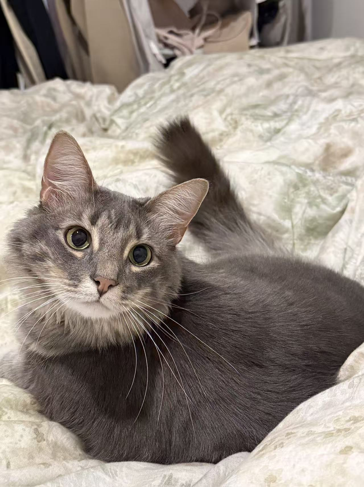

Computer Science Graduate Student
Duke University, US
📧 felixchen713@gmail.com
🏫📧 xc252@duke.edu
🔗 LinkedIn
🐙 GitHub
I am a CS graduate student at Duke University, focusing on Software and Cybersecurity. My academic interests include software design, Cybersecurity, and building reliable software systems.
Outside of research and coding, I’m a big cat person 🐱 and a sports enthusiast 🏸🏀. I enjoy playing badminton and basketball whenever I’m not in front of a screen.
This is my cat — usually saying hi, sometimes judging me:

My cat saying hi 🐾